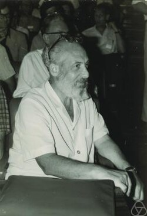
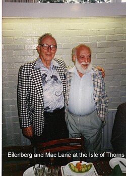

Samuel Eilenberg | |
|---|---|
 Samuel Eilenberg (1970) | |
| Born | September 30, 1913 |
| Died | January 30, 1998 (aged 84) New York City, United States |
| Citizenship | Russian, Polish, American |
| Alma mater | University of Warsaw |
| Known for | Acyclic model Category theory X-machine Weak dimension Projective module Shuffle algebra Simplicial set Standard complex Eilenberg's obstruction theory Eilenberg swindle Eilenberg–Ganea conjecture Eilenberg–Ganea theorem Eilenberg–MacLane space Eilenberg–Moore spectral sequence Eilenberg–Niven theorem Eilenberg–Steenrod axioms Eilenberg–Zilber theorem Cartan–Eilenberg resolution Chevalley–Eilenberg complex |
| Awards | Wolf Prize (1986) Leroy P. Steele Prize (1987) |
| Scientific career | |
| Fields | Mathematics |
| Institutions | University of Michigan Indiana University |
| Thesis | On the Topological Applications of Maps onto a Circle (1936) |
| Kazimierz Kuratowski Karol Borsuk | |
Doctoral students | Jonathan Beck David Buchsbaum Martin Golumbic Daniel Kan William Lawvere Ramaiyengar Sridharan Myles Tierney |
Samuel Eilenberg (September 30, 1913 – January 30, 1998) was a Polish-American mathematician who co-founded category theory (with Saunders Mac Lane) and homological algebra.[1]
He was born in Warsaw, Kingdom of Poland to a Jewish family. He spent much of his career as a professor at Columbia University.
He earned his Ph.D. from University of Warsaw in 1936, with thesis On the Topological Applications of Maps onto a Circle; his thesis advisors were Kazimierz Kuratowski and Karol Borsuk.[2] He died in New York City in January 1998.
Eilenberg's main body of work was in algebraic topology. He worked on the axiomatic treatment of homology theory with Norman Steenrod (and the Eilenberg–Steenrod axioms are named for the pair), and on homological algebra with Saunders Mac Lane. As a result of this work, Eilenberg and Mac Lane developed the field of category theory, for which they are now best known.
Eilenberg was a member of Bourbaki and, with Henri Cartan, wrote the 1956 book Homological Algebra.[3]
Later in life he worked mainly in pure category theory, being one of the founders of the field. The Eilenberg swindle (or telescope) is a construction applying the telescoping cancellation idea to projective modules.
Eilenberg contributed to automata theory and algebraic automata theory. In particular, he introduced a model of computation called X-machine and a new prime decomposition algorithm for finite state machines in the vein of Krohn–Rhodes theory. He also identified a natural correspondence between certain classes of regular languages called varieties and pseudovarieties of finite monoids, a result which is now known as Eilenberg's theorem.
Eilenberg was also a prominent collector of Asian art. His collection mainly consisted of small sculptures and other artifacts from India, Indonesia, Nepal, Thailand, Cambodia, Sri Lanka and Central Asia. In 1991–1992, the Metropolitan Museum of Art in New York staged an exhibition from more than 400 items that Eilenberg had donated to the museum, entitled The Lotus Transcendent: Indian and Southeast Asian Art From the Samuel Eilenberg Collection.[4][5] In reciprocity, the Metropolitan Museum of Art donated substantially to the endowment of the Samuel Eilenberg Visiting Professorship in Mathematics at Columbia University.[6][7]

{kind=link}
{kind=link}